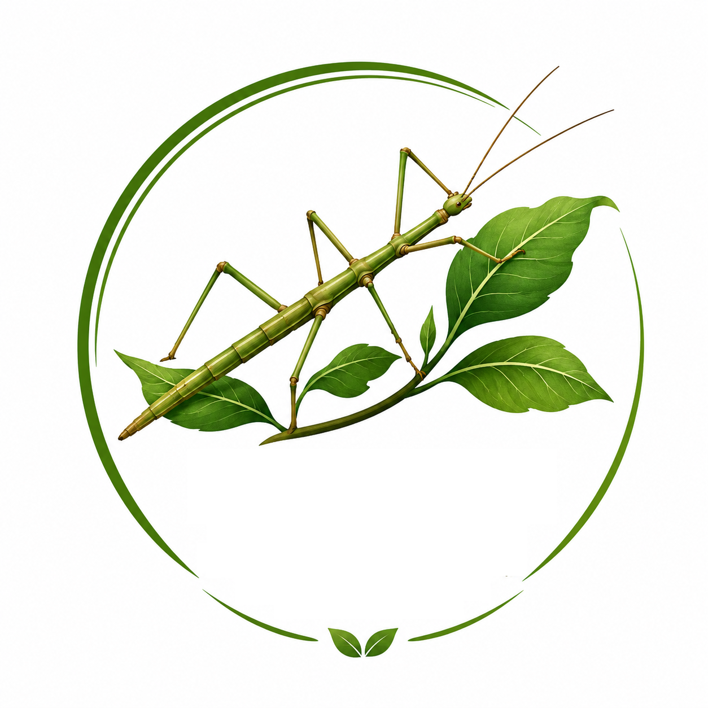

Découvrir
Apprends à reconnaître les différentes parties du corps du phasme et comprends son fonctionnement.
Découvre le phasme indien Carausius morosus, un insecte fascinant facile à observer et à élever, comme en classe.

Grâce à son camouflage impressionnant, le phasme ressemble à une petite branche vivante. Ce site présente sa morphologie, son mode de vie et les bases de son élevage.
Apprends à reconnaître les différentes parties du corps du phasme et comprends son fonctionnement.
Construis un vivarium adapté et découvre comment maintenir un élevage en bonne santé.
Suis les mues, la croissance, la reproduction et le comportement de Carausius morosus.